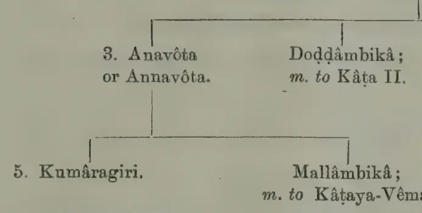

Tottaramūḍi plates of Kāṭaya-Vēma ; Śaka-Saṅvat 1333
TOTTARAMUDI PLATES OF KATAYA-VEMA ;
SAKA-SAMVAT 1333.
By J. RAMAYYA, B.A., B.L.
These copper-plates are said to have been discovered more than thirty years ago by one Mokkapatla Râjappa of Tottaramûđi in the Amalâpuram tâluka of the Gôdâvarî district, while digging for earth on the site of a ruined house. I obtained them in 1892 through the kindness of a friend, and published the inscription in the Telugu paper Chintâmani for August 1893 at Rajahmundry. The plates are now deposited in the Madras Museum.
The grant is inscribed on three copper-plates, measuring 9½ by 5 inches each, and weighing in all 3lb 7½oz.4 The plates are numbered, and were held together by a (now broken) copper ring, passed through circular holes on the left-hand side, and surmounted by the figure of a couchant bull, the vehicle of Śiva, which rests on a plain pedestal. The sun and the crescent of the moon are soldered on the ring behind and in front of the pedestal. The diameter of the ring is about 3¾"; its thickness about ¾"; the height of the bull 1¼"; and the length and breadth of the pedestal 1½" by ¾". The plates are in a fair state of preservation. Each of them bears writing on both sides. There are thirteen lines on each side except the last, which has only six lines. The letters are deeply cut and clear.
The characters used are of the old Telugu type. The following are some of the instances in which they differ from the modern Telugu characters. The talakaṭtu or secondary form
1 Or, ' on that day.'
2 If my emendation on p. 317, note 2, is correct, the word ' witnesses' should be substituted for ' earth.'
3 बाषीकूपतडागादि देवतायतमानि च । अम्रप्रदानमारामाः पूर्वमार्याः प्रचचते ॥
4 This is exclusive of the weight of the ring, and of a piece of the third plate which has unfortunately been mislaid ; see p. 324, note 9.
of a is like the lower half, and the guđi or secondary form of i like the upper half, of a circle. To denote i, the tip of the left leg of i is slightly curved inwards. The secondary form of e is like a sickle, and no distinction is made between that and the secondary form of é, nor between those of o and ó.1 These vowel signs are generally detached from the consonants to which they appertain, except in the case of bh, v, n, ch, etc. The use of the perpendicular line at the bottom, to distinguish the aspirated from the unaspirated forms of consonants, is not met with. Bh is distinguished from b by the talakaṭtu, which is absent in bhi, bho and bhau; these forms are, therefore, similar in appearance to the corresponding forms of b. D resembles the modern d, and dh the modern d.
The following orthographical peculiarities may be noticed. When r happens to be the initial letter of a compound akshara, it is generally represented by its secondary form, called velapalagilapa (ll. 5, 8, 17, 27, 32), although the more usual form is also sometimes used (in karma and śaurya, ll. 7, 11). G is sometimes unnecessarily doubled after r, as in Bhárggava for Bhárggava (ll. 17, 30), and the anusvára is used in certain places instead of n, as in yasmiñ=nissíma° (l. 16) and punar=Añnavóta° (l. 35). The inscription is composed throughout in Sanskrit verse, except the description of the boundaries of Mallavaram (ll. 51-57) and the last line of the inscription, which are in Telugu prose.
The inscription opens with invocations of the Boar-incarnation of Vishnu (verse 1), of Gaṇapati (v. 2), and of the Moon on the head of Śiva (v. 3), as in the case of the Vânapalli plates of Anna-Vêma.2 It then refers to Vishnu, “the first of the gods,” from the lotus of whose navel was born the Creator of the three worlds, from whose mouth, arms, thighs and feet emanated the castes (v. 4). One of the branches of the fourth caste (v. 5) was the Pantakula (v. 6). To this belonged king Vêma, surnamed Jaganobbagaṇda, the builder of a flight of steps on the bank of the Pâtálagaṅgâ at the foot of the Śrīśaila hill (v. 7 f.). His son was Anavóta3 (v. 10). The younger brother of the latter, named Annavêma or Anavêma, was also known as Vasantarâya, ‘the king of spring,’ and Kshurikâsahâya, ‘one whose chief weapon is a dagger’ (v. 12).4 The epithet Vasantarâya5 appears to have been earned by Anavêma by the prominent part he took in the annual vasantótsava or spring festival, which is alluded to in verse 14.6 Anavóta had a son named Kumâragiri, who ruled the country a long time from his ancestral capital Koṇdavidu (v. 15 f.).
Kumâragiri’s minister was Kâṭaya-Vêma, who excelled Brihaspati and Śukra in intelligence,7 and Paraśurâma and Arjuna in valour (v. 18). Kâṭaya-Vêma rendered great help to Kumâragiri in obtaining possession of and governing his ancestral territory, even as Krishṇa did to Yudhishthira (v. 19). In return for these services he received from his sovereign the gift of the “eastern country,” of which Râjamahêndranagari (the modern Rajahmundry) was the capital (v. 20). Verse 21 traces the descent of Kâṭaya-Vêma from Kâṭa (I.), whose son was Mâra. Mâra’s son was Kâṭa (II.), whose son was Kâṭaya-Vêma, who issued the grant (v. 23). We are also informed incidentally that Kâṭaya-Vêma was the son-in-law (jâmâtri) of Annavóta and the son of the daughter (dauhitra) of Vêma, and that his mother’s name was Dodđâmbikâ (v. 21).8 His wife was Mallâmbikâ, who got the Śiva temple of Mârkaṇdêya
1 For the use of the secondary forms of short e and o see the Telugu portion on pages ii. b and iii. a of the plates.
2 Above, Vol. III. p. 59.
3 This name stands for Ana-Pôta. According to Telugu grammar p becomes v under certain circumstances.
4 See the Vânapalli grant, where the same epithets are applied to Anavêma.
5 Compare above, Vol. III. p. 65, note 6, and p. 286.
6 See Śrīnâtha’s Kâśtikhaṇdamu, where a similar festival at Rajahmundry is described.
7 Kâṭaya-Vêma was the author of a learned commentary on Kâlidâsa’s three dramas.
8 This relationship is made clearer in the extract from the Kumâragirirâjtyam appended to this paper, which states that Kâṭaya II. begot Kâṭaya-Vêma by Dodđâmbâ, the daughter of Vêma (verse 10), and that Kâṭaya-Vêma was bháginêya (sister’s son) and jâmâtri (son-in-law) to Annapôta (v. 12).
on the Gōdāvarī at Rājamahēndranagara (Rajahmundry) covered with gold and gems and performed several other charities (v. 24 f.). The inscription then proceeds to state that, on the full-moon day of Kārttika (Kārttiki) in the cyclic year Khara, corresponding to the (expired) Šāka year counted by the gupas (3), Rāmas (3) and Viśvas (13),—i.e. 1333, or A.D. 1411-12,—Kāṭaya-Vēma granted the village of Mallavaram, which was named after his wife Mallāmbikā (v. 26) and which was situated on the bank of the Vṛiddha-Gautamī in the vicinity of Muktiśvara in the Kōnadēsa (v. 27), to Nṛisimha, who was the son of Ahōbala and the grandson of Appayārya. The donee belonged to the Kāśyapa gōtra (v. 28) and the Kāṇva śākhā (vv. 26 and 29). He divided the village with his relations (v. 29). Then follows a description, in Telugu prose, of the boundaries of Mallavaram (ll. 51-57). This village was bounded in the north-east by Tottađimūṇdi, in the south-east by Mallāyammaṅgāri-Komaragiripuram,1 and in the west by the Vṛiddha-Gautamī. Then follow seven imprecatory verses (30-36) in Sanskrit. The concluding verse (37) tells us that this edict (śāsana) was composed by Śrīvallabha of the Kāṇva gōtra, the son of Lakshmī and Śrīvallabhārya. The grant bears at the end the signature (vrālu) of Vēmu (i.e. Kāṭaya-Vēma).
Of the localities mentioned in this inscription, Koṇdaviḍu (l. 27) and Rājamahēndri (Rajahmundry) (ll. 33 and 42) are well known. The term Kōna (l. 48) as the name of a tract of country is not unfrequently met with in inscriptions. The Pithāpuram inscription of Mallidēva2 gives a list of the chiefs of Kōnamaṇdala, and the Naḍupūru grant of Anavēma3 refers to Kōṇasthala as being situated in the Gōdāvarī delta. The term Kōnaśma is in common use in the Gōdāvarī district, where it is now applied to a portion of the Amalāpuram tāluka, which, being watered by several branches of the Gōdāvarī, is as fertile as a kōna or valley. The village of Muktiśvaram (l. 49) is situated in this Kōnaśma on the right bank of the Gautamī, right opposite to Kōṭipalli on the other side. It contains an ancient and celebrated temple, an account of which is given in the Gautamī-Māhātmya.4 The Vṛiddha-Gautamī (ll. 48, 54, 55), one of the seven branches of the Gōdāvarī, runs close by Muktiśvaram on the south and is entirely dry, except perhaps when the Gōdāvarī receives heavy floods. Mallavaram, which is said to have been situated on the bank of this river, has long since ceased to exist as a separate village and now forms part of Tottaramūṇdi, which is mentioned as Tottađimūṇdi among the boundaries of Mallavaram (ll. 52 and 56); but the Mallavaram lands are identified to this day. When Mallavaram was a separate village, the Kappagantula family possessed the mīrāsī right to the village, and this family belongs to the Kāśyapa gōtra, as did the family of the original grantee (l. 49).
Historically this inscription is important as giving a list of the Koṇdaviḍu chiefs down to Kumāragiri, and as showing when and under what circumstances the Rājamahēndri portion of the Koṇdaviḍu territory became detached from the rest of it. As has been seen, the inscription traces the Reṇḍi line from Vēma, who had two sons, Anavōta and Anavēma, Anavōta's son being Kumāragiri. This genealogy is, in the main, supported by the introduction to Kāṭaya-Vēma's commentary on Kālidāsa's Šākuntala, called Kumāragirirājīyam (after Kumāragiri Reṇḍi), an extract5 from which is appended to this paper. That book mentions the same names as this grant, with the exception of that of Anavēma. Both the Vānapalli6 and Naḍupūru7 grants of Anavēma trace the line from Vēma's father Prōla, the earliest member of
1 [This village, which is not found on the Madras Survey Map of the Amalāpuram tāluka, must have been an agrahāra founded by Mallāmbā, the wife of Kāṭaya-Vēma, and named after her brother Kumāragiri.—E. H.]
2 Above, p. 84.
3 Above, Vol. III p. 287.
4 See also Mr. Sewell's Lists of Antiquities, Vol. I. p. 32.
5 I am indebted for this to the late Paravastu Jagannāthasvāmi Ayyavaralu Gāru of Vizagapatam.
6 Above, Vol. III. p. 59.
7 ibid. p. 286.
the dynasty mentioned in any published gene Putting all these accounts together, we get the
THE REDDIS C
1.
2.

All these accounts agree in ascribing to Vêma connecting the Pâtâlagangâ with the temple the epithet of Vasantarâya. This genealogy seems to have been based partly on local tradition.
The following genealogy of Kâṭaya-Vêma and in the Kumâragirirâjîyam:—
1. Kâṭa or
2. M
3. Kâṭa or
4. Kâṭaya
Kâṭaya II. married Dođđâmbâ, the dan Anavôta and Anavêma; and Kâṭaya-Vêma mother uncle Anavôta and sister of Kumâragiri.
TE
First Plate
| 1 | ❖ विश्वंभरोव्याद्भदारः | केलिपख्ति |
| 2 | नोदाहमवाप्य भूः ॥ [१*] भवत | |
| 3 | दानेन सुरभि[:*] स्वस्य दानेन | शशधरकिशोरः क- |
alogy, and conclude with Anavôta and Anavêma. following genealogy of this dynasty.1
OF KONDAVIDU.
Próla.
Vêma.
4. Anavêma
or Annavêma.
Vêmasâni ;
m. to Nallanûnka.
na.
ema ( No. 2 ) the construction of a flight of steps on the Śríśaila hill, and to Anavêma ( No. 4 ) differs from that given by Mr. Sewell,2 which ons.
ma of Râjamahêndri is given in this grant
Kâtaya I.
âra.
Kâtaya II.
-Vêma.
aughter of Vêma of Kondavîdu and sister of married Mallâmbâ, the daughter of his maternal
XT.3
; First Side.
ततांबुधिः । विश्वंभराभवत्सापि ये-
ं भवतां नागः शंकरिः शंकरोन्वहं ।
सुरभिश्च यः ॥ [२*] शिरोरत्नं शंभोः
beginning with Appunya-vaṅṣambu Kaṅśāsura-dhvaṅsi the two genealogical accounts in my Reports on Sanskrit ff.— E. H.]
From the original plates.
1 For further confirmation of this list see the passage in Śrînâtha's Bhīmakhaṇḍamu, âśyâsamu 1.—[See also MSS. No. I. pp. x. and 83 f. and No. II. pp. xii. and 91
2 Lists of Antiquities, Vol. II. p. 187.
3
4 लयतादलंकारे गौर्या मुकुरति रते दीपति च यः विसांकूरभांत्या1 ग-
5 गनतटिनीहंसपटलीमुहुश्वंचूघर्षाद्विमलविमलस्तेजित इव ॥ [३*] अस्ति स्व-
स्तिम-
6 दायमध्वरभुजामंभोजनाभं महस्तंनाभीकमलादभू[त्*]विजगतां नि-
7 र्माणकर्मक्षमः । मुख्यो विश्वसृजां चिरंतनगिरां विश्रामघं-2
8 3टापधस्तस्यासन्मुखबाहुसक्थिपदतो वर्णाः क्रमेणोदिताः ॥ [४*] पुं-4
9 सस्तस्य पुरातनस्य चरणांभीजातजातं कुलं स्वल्पाचारविधानतोपि विमलं5
10 6शुश्चस्वभावादिदं । आसीत्किंच कलौ युगे नृपतयः प्रायेण यत्रोदिता-
स्तेज-
11 :शौर्यवदान्यताप्रभृतिभिर्युक्ता गुणैः प्राभवन् ॥ [५*] तत्र पंटकुलं नाम
प्रसूतं
12 बहुशाखिनि । तराविव फलं रम्यवृत्तं सरसमुज्वलं7 ॥ [६*] तत्रासीद्वेम-
भूपालः
13 कुले विबुधरंजकः । पयोधाविव संतानो राजरत्नोद्भवाकरे ॥ [७*] श्री-
मान्वेम-
First Plate ; Second Side.
14 महीपतिस्स विदधे पातालगंगातटे श्रीशैले जगनोब्बगंडबिरुदस्सोपान-
15 वीर्धी8 शुभां । यासौ दीव्यति दिव्यसीमनगरारोहोद्यतानां नृणां नि-
श्रेणि-
16 : परिकल्पितेव नितरामाब्रह्मकल्पस्थिरा ॥ [८*] यस्मिंनिस्सीमभूदानख्याति-
सौभा-
17 ग्यशालिनि । द्विजैनं बहु मन्यंते बलिभीवनभार्ग्वाः ॥ [९*] अनवोत-
प्रभुस्तस्माद-
18 जायत भुजायतः । महासेनो महादेवादिवारातिकुलांतकः ॥ [१०*]
अनवोत-
19 मही[प]तौ धरित्रीं परितो विभति पंनगेंद्रमुख्याः । चिरमुच्चुसिता9
लघूक्ष-
20 ते स्वे भरणे जीवनमस्य संस्तुवंति ॥ [११*] तस्यानुजसुजननोस्ति
वसं-10
1 Read भान्या.
2 The anusvāra stands at the beginning of the next line.
3 Read °पथ°.
4 The anusvāra stands at the beginning of the next line.
5 The anusvāra stands at the beginning of the next line.
6 Read शुद्ध.
7 Read °मुक्क्षलम्.
8 Read वौर्धी.
9 Read °मुच्क्षसिता
10 The anusvāra stands at the beginning of the next line.
21 तरायो वीरानवेमनृपतिः क्षुरिकासहायः । यस्मिन् मही-
22 मवति सार्थमभूचिराय नामावनौ सुमनसां बहुशो वदान्ये ॥ [१२*] हे-
23 [म]ाद्रिदाननिरते यस्मिननवेमभूपतौ मुदितान् । अवलोक्य भूमिदेवान्
24 [देव]ा स्पृहयंति भूमिवासाय ॥ [१३*] यस्मिन् किरति वसंते दिशि
दिशि कामोत्स-
25 वेषु कर्पूरं । अ[धि]वासितपरिधानानुभवज्ञोभूचिराय गिरिशोपि ॥
[१४*] कु-
26 मारगिरिभूपोभूदनवीतविभोस्मुतः । जयंतो वासवस्येव प्रद्युम्न द्व-
Second Plate ; First Side.
27 व शाङ्गिः1 ॥ [१५*] कोंडवीडुरिति ख्याते पुरे स्थित्वा कुलागते ।
कुमारगिरिभूपो-
28 यं [चि]रं भूमिमपालयत् ॥ [१६*] तुला पुरुषरत्नस्य श्रीकुमारगिरिः
कुतः ।
29 तुलापुरु[षमु]ख्यानि महादानानि योतनोत् ॥ [१७*] आसोदमात्यरत्नं
काट-
30 यवेमप्रभुस्तस्य । अतिसुरगुरुभार्गवमतिरतिभार्ग[व*]विजयविजयविख्या-
31 तिः ॥ [१८*] सिंह[त]सने निधायासौ कुमारगिरिभूवरं । अतेजयन्महाते-
जा[:*] श्रीक्ष-
32 ष्ण द्रव धर्मजं ॥ [१९*] कुमारगिरिभूनाधो2 यस्मै विक्रमतोषितः
प्रादात्
33 प्राचीं भुवं राजमहेंद्रनगरोमुखां ॥ [२०*] नमा3 काटमही-
34 भुजो गुणगणोदारस्य मारप्रभोः पौत्रः काटयवेमभू-
35 मिरमणः श्रीवेमपृध्वीपतेः4 । दौहित्रः पुनरंनवीतनृपतेर्ध्वात्रीश्चूडा-5
36 मणेर्जामाता जयति क्षितिं चिरमवन् दोड्डांबिकानंदनः ॥ [२१*] काटय-
37 वेमकटाक्षे प्रभवति सदये च निर्दये च (निर्दये च) तथा । गजपति-
मुखनृपती-
38 नां चित्रं मुक्तातपत्रता भवति ॥ [२२*] भूपालान्नमयन् प्रजा नियमयन्
39 कांताजनं6 कामयन् भूदेवान्नमयन्नरीन्विरमयन् मित्राणि विश्रामयन् । कीर्तिं
स्वां7
1 Read शाङ्गिः.
2 Read नाथी.
3 See below, p. 329, note 2.
4 Read पृथ्वी.
5 Read °पतेर्धात्रीश्.
6 The syllables intájanam ká are entered below the line, and the place in which they are to be inserted, is marked by a cross over the line.
7 The anusvár stands at the beginning of the next line.
Second Plate ; Second Side.
40 भ्रमयन्नघानि श्रमयन् धर्म समायामयन् सोयं वेममहोपतिर्वि-
41 जयते काटावनीशात्मजः ॥ [२३*] अभूत्काटयवेमस्य जाया मल्लांबिका
सतो । अ-
42 शेषगुणसंपूर्णा1 पातिव्रत्यधुरंधरा ॥ [२४*] राजद्राजमहेंद्रनामनगरे गोदा-
43 वरीतीरगं मार्कडेयशिवालयं पतिहिता मल्लांबिका धार्मिका । कृत्वा
शुभ्र-2
44 सुवर्णरत्नखचितं ब्रह्मप्रतिष्ठास्तथा सत्राण्यध्वनि च प्रपा विजयतेनेकां-
45 स्तटाकानपि ॥ [२५*] श्रीशाके गुणरामविश्वगणिते कार्तिक्यहेब्दे खरे
प्रादात्काटय-
46 वेमय[:*] स्ववनितामल्लांबिकानामतः । ग्रामं मल्लवरं नृसिं-
47 हविदुषे3 काखदिजायादरादाचंद्रार्कमुदर्कलालसमतिस्मैश्व-
48 र्यभोगाष्टकं ॥ [२६*] कोनदेशेग्रहारोयं भाति मल्लवराभिधः । तीरे च
4 वृध्वगौतम्या-
49 : पुण्यो मुक्तोश्वरांतिके ॥ [२७*] अप्पयार्यस्य पौत्रोसौ नृसिंहः काश्य-
पान्वयः । अ-
50 न्नदानपरो नित्यमहोबलतनूभवः ॥ [२८*]5 यधाविभागमत्रांशान् विधाय
ज्ञाति-
51 भिस्सह । अधीतकाखशाखाद्वा6 भुङ्ते7 धन्यो यथासुखं ॥ [२९*] *
ईवूरि पोलमेर
52 सोमलु । तूर्पन । तीत्तडिमूंडि पोलमेर पुंत बत्तुलमुप्पडितोंटमामिं-8
Third Plate ; First Side.
53 ड्लु मोदलुगां बोयि मल्लायभ्मंगारिकीम[रगिरिपुरपु पोलमेर]9
54 पुंत मोचेनु ॥ दक्षिणान । आ कोमरगिरिपुरपु पोल[मेरवुंडे वृद्धगौत-
•मि]
55 मोचेनु । पडुमटनु10 वृध्वगौतमि । उत्तराननु । विद्या[रण्यतीर्थमनि
वृद्धगौत]-
56 मिलोनि गुमि मोदलुगा वच्चिन तोत्तडिमूंडि पोल[मेर पुंत बत्तुलमु]-
57 प्पडितोंटमामिंड्लु मोचेनु । ** पालनमुक्तस्य चापहरणदोषस्य च [प्र]-
58 काशनाय केचन पुरातना[:*] श्लोका लिख्यते ॥ दानपालनयोर्मध्ये
दानात्1
59 श्रेयोतुपालनं । दानात् स्वर्गमवाप्नोति पालनादच्युतं प-
60 (प)दं ॥ [३०*] शत्रुणापि कृतो धर्मः पालनीयः प्रयत्नतः । शत्रुरेव
हि
61 शत्रु[:*] स्याध्वर्मः2 शत्रुनं कस्यचित् ॥ [३१*] स्वदत्तां परदत्तां वा
यो हरेत वसुंधरां
62 । षष्टिवर्षसहस्राणि विष्ठायां जायते क्रिमिः ॥ [३२*] तटाकानां सह-
स्रेण चाश्व-
63 मेधशतेन च(ः) । गवां कोटिप्रदानेन भूमिहत्तर्श न शुध्यति ॥ [३३*]
न विषं विषमि-
64 त्याहुब्रह्मस्वं विषमुच्यते । त्रिषमेकाकिनं हंति ब्रह्मस्वं पुत्रपौ-
65 त्रकं ॥ [३४*] किंचैतद्दातृवचनं ॥ कर्तव्यवित्काटयवेमभूपः कृतांजलिः
Third Plate ; Second Side.
66 प्रार्श्ययते नृपालान् । एष्यान् भवद्भिः परिपालनीयो धर्मो ममायं दय-
67 या धिया वा ॥ [३५*] श्रीरामचंद्रेणाप्येवमेवोक्तं ॥ सामान्योयं धर्मसेतु-
68 नृपाणां कालि कालि पालनीयो भवद्भिः । सर्व्वानेवं भाविनः पार्श्विवे-
द्रान् भू-
69 यो भूयो याचते रामचंद्रः ॥ [३६*] कृतं श्रीवल्लभेनेदं शासनं सद्विका-
सनं ।
70 कण्वगोत्रेण पुत्रेण लक्ष्मीश्रीवल्लभार्ययोः । [३७*] श्रीवराहो रक्षतु ।
मंगळमहाश्री
71 श्री श्रीं जेयुन् [॥*] वेमु ब्रालु [॥*]
APPENDIX.
Extract from the Preface to Káṭaya-Vēma's Kumāragirirājīyam.
कौर्तिप्रतापसौभाग्यत्वागभीगत्रिभूतिभिः ।
एक एव कलौ आध्यः कुमारगिरिभूपतिः ॥ [१*]
1 Bend दानाच्छेयी.
2 Read स्याहर्मः.
वीरः श्रीरमणीविलाससुकुरी वैरियहयामणी-
सर्धयासविष्णुदः सितयशःपुष्पाभिवर्षी घनः ।
दत्ता शासनपत्रिका वसुमतौरचाविधौ श्रंभुना
खड्गी दिग्विजयी कुमारगिरिभूमर्तुः समुज्जृम्भते ॥ [२*]
जयति महिमा लोकातीतः कुमारगिरिप्रभोः
सदसि लकुमादेवौ यस्य श्रिया सदृशी प्रिया ।
नवमभिनयं नाद्यार्थानां तनीति सहस्रधा
वितरति बहूनर्थानर्थिव्रजाय सहस्रशः ॥ [३*]
राजवेश्याभुजंगः श्रीकुमारगिरिभूपतिः ।
शस्त्रौ काटयवेमस्य प्रगल्भा तत्र दूतिका ॥ [४*]
पादारविन्दात्परमस्य पुंसी वर्णश्चतुर्थोजनि विश्रवन्यात् ।
पुनाति नित्यं भुवनानि सिन्धुः पुण्यैः प्रवाहैः सहजा यदीया ॥ [५*]
बंभ्रेस्मिन्नदिती महीयसि मनोवंभ्रे जगत्पावने
धीरीदात्तगुणीत्तरी रघुरिव श्रीकाटयाख्यी नृपः ।
दानक्षात्रपरेण येन विदधे भूदेवसंतपर्यं
भूयिष्ठैः परिपन्थिपार्थिवजयव्याज्ञेन खर्व्वर्धनैः ॥ [६*]
तस्मादभूदखिलकर्मविदां वरेण्यी
मारक्षमाधिपतिरप्रतिमप्रभावः ।
अन्यानपास्य नृपतीनभिरूपसुच्चै-
वंव्रे स्वयं यमजमिन्दुमतीव कौर्तिः ॥ [७*]
तस्यास्तां तनयी समयविनयी विख्यातदोर्विक्रमौ
काटचीणिपतिश्च मारनृपतिः कान्तौ नितान्तौजसा ।
लक्ष्मीकौर्तिवसुंधराभिरभजत्सौभाग्यमाद्यस्तयोः
कौसल्यादिवधूजनैर्दंशरथः शोभां प्रपेदे यथा ॥ [८*]
असहायशूर इति काटयप्रभुं प्रवदन्ति मारनृपतेस्तनूभवम् ।
भुवनादिदुर्गजयसाहसेन यी जलदुर्गमल्लबिरुदः प्रशस्यते ॥ [९*]
पृथ्वौ ब्राह्मणसाचकार विदधे हेमाद्रिदानानि यः
सीपानावलिमाततान विषमे पाताव्यगङ्गापथे ।
दीक्ष्डाम्बासुपयस्य तस्य तनयां वेमप्रमीः काटयः
पुत्रं वीरमलश्च रामसदृशं वेमं विभूले भुवः ॥ [१०*]
गुणानां पुण्यानां वसतिरनपीतचितिपतेः
स्वसा श्रीदीब्रुाम्बा समभवदुमायाः प्रतिनिधिः ।
पिता भूम्न्नाथः पतिरपि महेशः प्रियसुती
महसेनी यस्याः स्वयमय यदार्थेति कथिता ॥ [११*]
मारक्षारमणः पितामहतया मातामहत्वेन च
श्रीवेमचितिनायकः प्रथयते यस्याभिजात्यश्रियम् ।
धन्यः काटयवेमभूपतिरसौ यज्ञागिनेयस्तती
जामाता स्वयमन्नपीतनृपतेः चीणीशचूडामणेः ॥ [१२*]
श्रीकृष्णेन समः कुमारगिरिभूपाली नृपालीत्तमः
स्वामी यस्य वसन्तराजविरुदी वीरान्नपीतात्मजः ।
संयामार्शुनमामनन्ति सुधियस्तं भीमसेनान्वितं
भूमी काटयवेमभूधरमही कर्णप्रियास्तद्गुणाः ॥ [१३*]
पल्ललपञ्चकमकरोत्प्रधने निर्जित्य वैरिणी रामः ।
वैरिकुलपरशुरामः काटयवेमस्तु कौर्तिवार्धिशतम् ॥ [१४*]
धाटीघीटीखुरायवृटितगिरितटे यत्र माल्लेटिदुर्गं
दुर्गं किम्बारसंज्ञं दलितरिपुवले दुर्गमं वेंडपूडिम् ।
दुर्भेदं वज्रकूटं जितवति रभसा रामगिर्याख्यदुर्गं
विख्यातं वीरघीटं गलितमसुहृदां वीरसंनाहधार्याम् ॥ [१५*]
मुनीनां भरतादीनां भीजादीनां च भूभुजाम् ।
शास्त्राणि सम्यगालीच्य नाच्यवेदार्थवेदिनाम् ॥ [१६*]
प्रीक्तं वसन्तराजेन कुमारगिरिभूभुजा ।
नामा वसन्तराजीयं नाच्यशास्त्रं यदुत्तमम् ॥ [१७*]
तत्रीक्तेनैव मार्गेण दर्शिताशेषलक्षणम् ।
कवीनामाश्रयी मन्त्रिकाटभूपतनूभवः ॥ [१८*]
सीयं वेमविभुः कुमारगिरिणा राज्ञा नियुक्तः क्वती
नाच्यानां चितयं क्वतं क्वतधिया श्रीकालिदासेन यत् ।
तस्योदीर्णरसार्णवस्य रसिकः शाकुन्तलादेः स्वयं
व्याख्यानं कुरुते कुमारगिरिराजीयाख्यमध्ये हितम् ॥ [१९*]
POSTSCRIPT.
[Of the nineteen verses now published by Mr. Ramayya, only five are found at the beginning of a MS. of the Kumâragirirâjîya, as printed in Dr. Burnell's Tanjore Catalogue, p. 173. While Mr. Ramayya's copy reads in verse 1 Kumâragiri-bhúpatih, the Tanjore MS. and an India Office MS. (Professor Pischel's Dissertatio de Grammaticis Prâcriticis, p. 17) have Kumâragiri-jó nripaḥ. This erroneous reading has naturally enough led to the statement that the Vasantarâjîya Nâtyaâśstra was composed by 'Vasantarâja, king of Kumâragiri, a place on the frontiers of the Nizam's country' (see Wilson's Mackenzie Collection, Madras reprint, p. 157; Professor Pischel, l. c. p. 18; Professor Aufrecht's Catalogus Catalogorum, p. 556). It is now clear that the author of the work was Kumâragiri, king of Konđaviđu, who bore the surname (biruda) Vasantarâja (above, verse 13), which he had inherited from his uncle Anavêma; see p. 319 above.— E. H.]